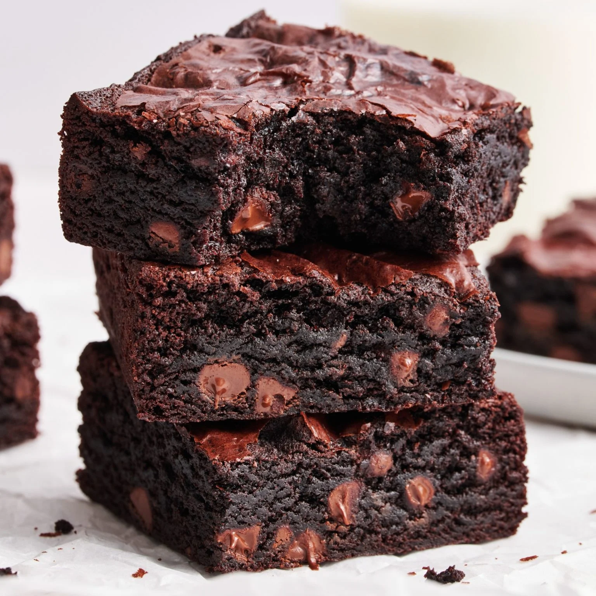

Best Ever Chewy Brownies

BEST Ever Chewy Brownies are just as chewy as boxed brownies but packed with so much more rich chocolate flavor. One bowl recipe, ready in less than 1 hour!
Ingredients
- 5 tblsp unsalted butter
- 1 1/4 cups granulated sugar
- 2 large eggs plus 1 egg yolk, cold
- 1 tspn vanilla extract
- 1/3 cup olive oil
- 3/4 cup cocoa powder
- 1/2 cup all -purpose flour
- 1 tablespoon cornstarch
- 1/8 teaspoon baking soda
- 1/4 tspn salt
- 3/4 cup semisweet chocolate chips
- Preheat the oven to 325°F. Line an 8 by 8-inch light-colored metal pan*** with foil or parchment paper and spray with nonstick cooking spray.
- In a microwave-safe bowl, add the butter and sugar. Microwave for about 1 minute, or until the butter is melted. Whisk in the eggs, egg yolk, and vanilla. Stir in the oil and cocoa powder.
- With a rubber spatula, stir in the flour, cornstarch, baking soda, and salt until combined. Stir in the chocolate chips.
- Spread the brownie batter evenly into the prepared pan. Place in the oven and bake for 30 minutes, or until the brownies are set and a cake tester inserted into the center has moist crumbs attached. Do not overcook. Let cool completely to solidify before cutting and serving.
- Brownies can be stored in an airtight container at room temperature for up to 3 days. Brownies will be gooey when served warm, chewy when served at room temperature, and fudgy when served chilled.